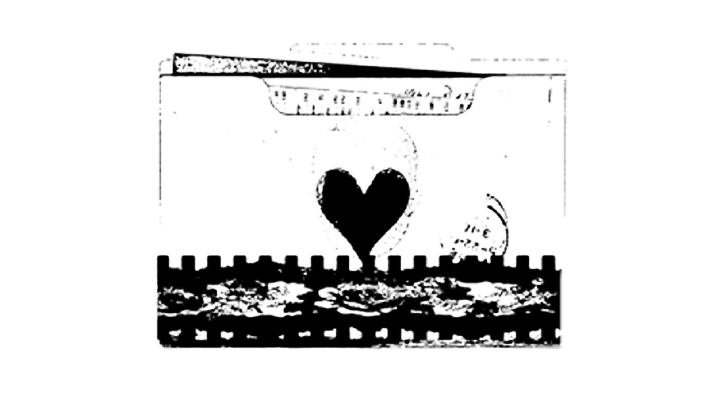

For YouYour blood has found its way inside my memories.
If I could open up my chest, I'd find memories of you buried between my ribs. Flowers have grown while my lungs are rotten.
You were a stranger, and I don't remember what we were talking about. I think that is what memory is sometimes. Not remembering what happened but remembering that you didn't want it to end. I wish we could stay forever in this memory.
My thoughts slip through the cracks before I can catch them.
I don't know how to explain what happens when you are near. It's like the darkness dissapears. It doesn't.
But somehow I feel like I am not being followed.
Something in me becomes less afraid of being seen when you are with me.
And maybe that's why I'm so afraid.
Happy birthday, Kazu
I want to tell you so many things but each time i try the words grow legs and run away.
Maybe there are things inside me that have not yet learned how to carry into language.
I'm still learning the shape of my being here. Sometimes I dissapear inside myself. Sometimes I come back. All I'm certain of is that you make the world seem a little quieter.
I wish I knew exactly how to explain what this means to me.
But you mean a lot.
Memory Lane
...
Somehow, the world becomes quieter whenever you are near.